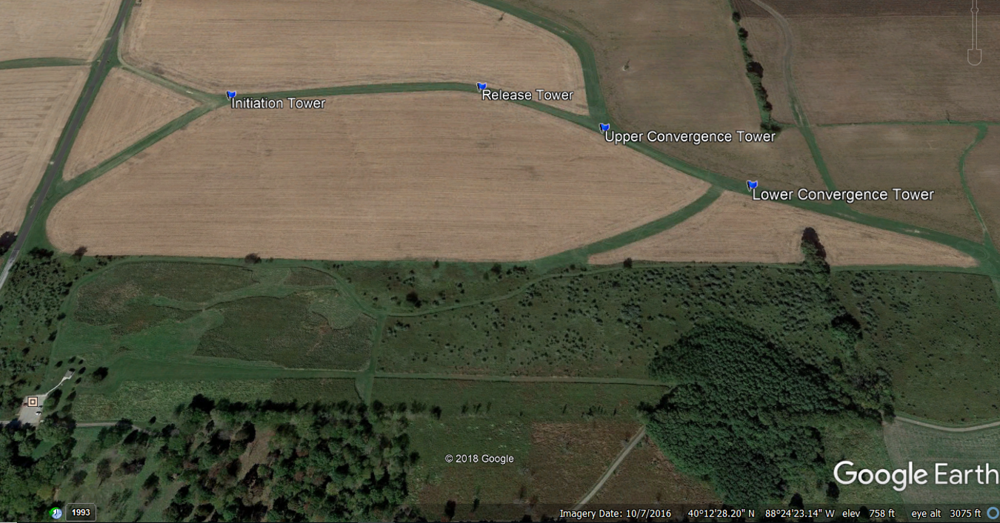
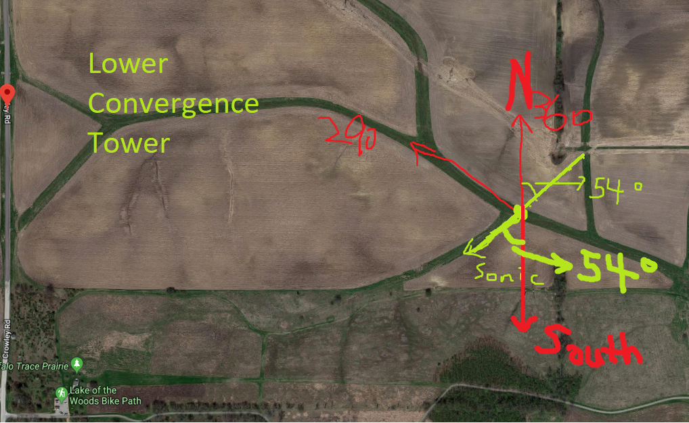

In this documentation, we will list out the progress being done for the analysis and the findings of such.
The current study is aiming at finding if our SAVANT field data has similar turbulence effect happened under Stable Boundary Layer.
As for CASES-99:
The Cooperative Atmospheric Surface Exchange Study October 1999 (CASES-99) field observational program represents the second study to investigate linkages between the atmosphere and the Earth's surface. This study is designed to examine events in the nighttime boundary layer, and to investigate the physical processes associated with evening and morning transition regimes. The overall effort encompasses observation, data analyses and numerical modeling to achieve an understanding of episodic events that populate the nighttime stable boundary layer. — NCAR
The following types of data being collected during the experiment period are put into analysis.
| Device Type | Resolution [MM:SS] | Description |
|---|---|---|
| Sonic Sensor | 05:00 | The climate monitoring sonic sensors which were installed on 4 primary multi-level flux profile towers. For more information, please visit Data Report. |
| Dusttrak | 00:01 | The Aerosol Monitor provides real-time aerosol mass readings with gravimetric sampling. For more information, please visit Product Page. |
| Optical Particle Sizer | 00:01 | The OPS measures particles from 0.3 to 10 µm in 16 user adjustable size channels. For more information, please visit Product Page. |
The experiment location is located at Crowley Rd Mahomet Township, IL 61853.

| Flux Tower Name | Geo-location |
|---|---|
| Initiation Tower [Init] | 40°12'41.46"N, 88°24'37.99"W |
| Release Tower [Rel] | 40°12'42.04"N, 88°24'25.52"W |
| Upper Convergence Tower [Uconv] | 40°12'39.78"N, 88°24'19.61"W |
| Lower Convergence Tower {Lconv} | 40°12'36.91"N, 88°24'13.26"W |
| Location | Angle | Type |
|---|---|---|
| Init | 38° | M (Magnetic) |
| Rel | 108° | M |
| Uconv | 132° | M |
| Lconv | 54° | M |
The angle represents the degree in between the direction where the sensor arm is pointing at, and the direction of geological South. For example, at lower convergence tower:

Dustrak8530, 8520, OPC Setup Map (10/11/2018-10/12/2018)
| Height | Initiation Tower | Release Tower | Upper Convergence Tower | Lower Convergence Tower |
|---|---|---|---|---|
| 6.0 m | DT9 8530 | |||
| 3.0 m | DT5 – 8530 (see section 7 for instrument descriptions) | OPC1 | DT8 -8530 | OPC2 |
| 1.5 m | DT7 –8530 | DT10 – 8530 | ||
| 0.5 m | ||||
| 0.0 m | DT6 8530 DT3 8520 | DT2 8520 (no data recorded) |
Dustrak8530, 8520, OPC Setup Map (10/15/2018-10/16/2018)
| Height | Initiation Tower | Release Tower | Upper Convergence Tower | Lower Convergence Tower |
|---|---|---|---|---|
| 6.0 m | DT9 8530 | |||
| 3.0 m | DT5 – 8530 | OPC1 | DT8 -8530 | OPC2 |
| 1.5 m | DT7 –8530 | DT10 – 8530 | ||
| 0.5 m | ||||
| 0.0 m | DT6 8530 | DT3 8520 | DT2 8520 |
Dustrak8530, 8520, OPC Setup Map (10/17/2018-10/18/2018)
| Height | Initiation Tower | Release Tower | Upper Convergence Tower | Lower Convergence Tower |
|---|---|---|---|---|
| 6.0 m | DT9- 8530(no data recorded) | |||
| 3.0 m | DT5 – 8530 | OPC1 | DT8 -8530 | OPC2 |
| 1.5 m | DT7 –8530 | DT10 – 8530 | ||
| 0.5 m | ||||
| 0.0 m | DT6 8530 at 0.4 m Smoker | DT2-8520 | DT3-8520 |
Dustrak8530, 8520, OPC Setup Map (10/23/2018-10/24/2018, 10/27/2018, 10/29/2018-10/30/2018,)
| Height | Initiation Tower | Release Tower | Upper Convergence Tower | Lower Convergence Tower |
|---|---|---|---|---|
| 6.0 m | DT9- 8530 | |||
| 3.0 m | DT5 – 8530 | OPC1 | DT8 -8530 | OPC2 |
| 1.5 m | DT7 –8530 | DT10 – 8530 | ||
| 0.5 m | ||||
| 0.0 m | DT6 8530 at 0.4 m Smoker | DT2-8520 | DT3-8520 |
Dustrak8530, 8520, OPC Setup Map (11/2/2018-11/3/2018, 11/7/2018-11/8/2018, 11/10/2018, 11/11/2018-11/12/2018, 11/13/2018-11/14/2018)
| Height | Initiation Tower | Release Tower | Upper Convergence Tower | Lower Convergence Tower |
|---|---|---|---|---|
| 6.0 m | DT9- 8530 | |||
| 3.0 m | DT5 – 8530 | OPC2? | DT8 -8530 | |
| 1.5 m | DT7 –8530 | DT10 – 8530 | ||
| 0.5 m | ||||
| 0.0 m | DT6- 8530 | DT2-8520 | DT3-8520 |
The sonic sensor data was extracted by using NCToolkit, for more information, please visit NCToolkit Manual.
Do notice that:
The filename follows:
<MMDD>_<DataCategory>.csvFor example, 1018_3DWind.csv refers to 19:00 on October 17 to 18:59 on October 18. This is because the original data was stored in UTC time zone. The current data extraction tool has converted the time into CDT time zone.
The Dusttrak data was extracted by using DusttrakGrouperTool, for more information, please visit DusttrakGrouperTool Manual. Similarly, the data has been aligned in the same style as sonic sensor data. Therefore, the time range correction is the same as stated above.
Based on Jielun's CASE-99 analysis, in order to perform numerical analysis for turbulence regimes and turbulence intermittency in the stable boundary layers, the ideal weather condition should be stable and dry. Hence, we filter the experimental data based on the following criteria.
After reviewing Jielun's analysis performed on CASE-99, which were published in 2002, 2003, 2012, and 2016, I was not able to find any comments on data selection. According to weather history, there were dates during the data collection period for CASE-99 where extreme weather conditions occurred.
In addition, after examining the publications listed under CASE-99 Publications page, only vague descriptions were given on the data qualification. After discussion with Dr. Junming Wang and Dr. David Kristovich, the following approaches were taken based on difference criteria to select qualified data.
During the data collection period, sensors can be offline, or malfunction during operation. Under some occasions, we witness that on the same tower, sensors at certain height can have missing data samples. For example:
In order to maintain the data integrity, at the time when one or more sensor at a given tower is missing, all data samples being collected at the time will be removed.
According to Jielun's study:
Since the sonic anemometers were all mounted on booms pointing eastward, turbulent fluxes associated with winds from 270° ± 60° could be distorted by the 60-m tower; therefore, all the flux data from this sector were eliminated from this analysis.
— Turbulence Regimes and Turbulence Intermittency in the Stable Boundary Layer during CASES-99
The following rules are being applied to separate the observation datasets into different groups.
Precipitation brings high humidity condition during the experiments. The precipitation will lead to high thermal exchange post the precipitation period. This can cause instability environmental condition which is not suitable for our study. Hence, the following condition is being used in order to filter out instability period. Precip. is the variable of measured precipitation represented in the hourly climate data.
xxxxxxxxxxPrecip. > 0.00 inSince the precipitation resolution is only 0.01 in collected from the hourly weather station. Sometimes, light rain or short storm was not able to be properly reflected on hourly precipitation collection. Therefore, regular expression method is being used in order to sort out these un-measurable sampling periods. In the hourly climate data, variable Condition is used for observers to record current weather condition at the given time. Hence, the following condition is being used in order to filter out instability period.
xxxxxxxxxxCondition == 'Rain'|'Wintry Mix'|'Storm'|'Snow'Note that, for Condition == 'Rain, Light Rain, Heavy Rain are all included since these condition all contains the token Rain.
Post precipitation period, as the sensors are covered with moisture, according to technicians, 2 hours are usually needed for the surface of the sensors to dry out. During the drying period, the accuracy of the data may be affected due to local thermal exchange. Therefore, in order to avoid potential data corruptions, data from the hour before the starting of precipitation, along with 2 hours post the precipitation periods are being removed.